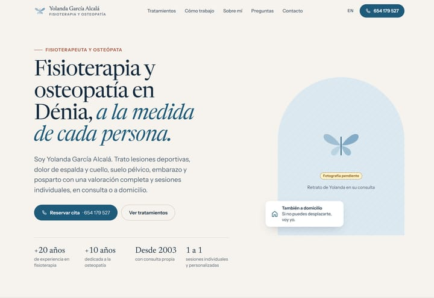
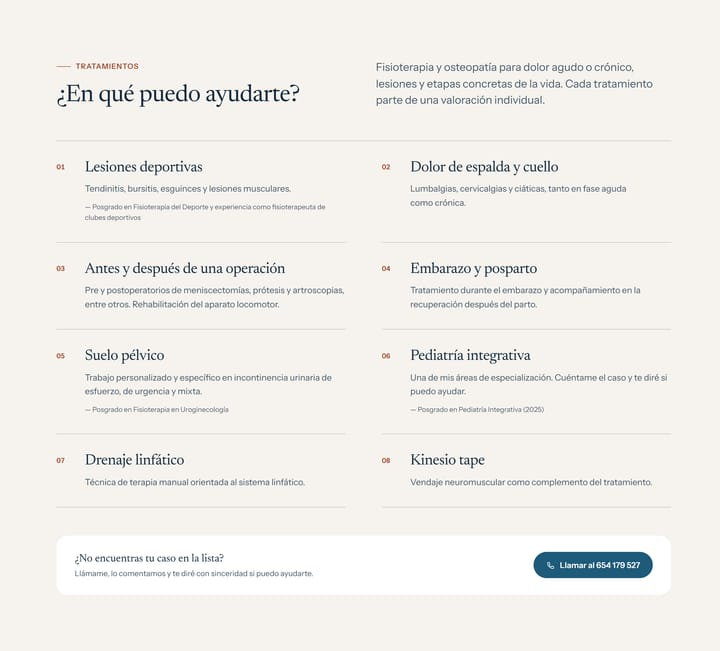
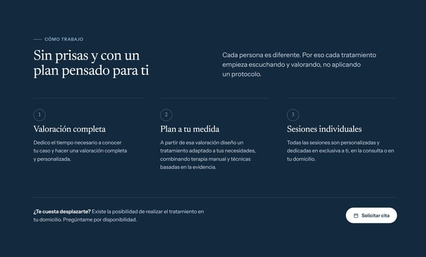

Fisioterapia Dénia
Una consulta con más de veinte años de trayectoria y una web que no se ponía de acuerdo ni con su propia dirección.
Estudio de rediseño independiente, sin relación comercial con la consulta. La marca y sus contenidos pertenecen a su propietaria.
- Negocio
- Consulta de fisioterapia y osteopatía de Yolanda García Alcalá, Dénia
- Acción principal
- Llamar para pedir cita
- Qué incluye
- Revisión de la web actual, web en español e inglés, página de trayectoria, redirecciones
- Año
- 2026

El punto de partida
Yolanda García Alcalá es fisioterapeuta y osteópata, con consulta propia en Dénia desde 2003 y especialización en suelo pélvico, pediatría integrativa y fisioterapia deportiva.
Su web tenía la información, pero mal ordenada y con contradicciones: datos distintos según dónde miraras, el horario escondido y ninguna foto de la persona que te va a atender.
En salud eso pesa. Quien busca un fisioterapeuta suele tener dolor, algo de prisa y ninguna gana de descifrar una web.
Lo que encontré revisando su web
- Dos direcciones distintas. La página decía C/ Isaac Peral, 6A; los metadatos que lee Google, Av. de Gandía, 20. Se usó la visible y se marcó para confirmar, en vez de elegir a ciegas.
- Un horario invisible. Solo aparecía en el código de la página, donde ningún paciente lo ve.
- Ninguna foto de Yolanda. En una consulta de una sola profesional, su cara es parte de la confianza.
- Direcciones frágiles. Páginas con tilde en la URL (
/sobre-mí/) y el inglés en/english/. Se cambian por direcciones limpias con redirecciones, para no perder a quien las tenga guardadas. - Datos legales pendientes. Faltaban el número de colegiada y otros datos que exige la publicidad sanitaria. Se dejan preparados y marcados.
- Analítica sin permiso. La web cargaba herramientas de seguimiento sin pedir consentimiento. El rediseño no carga nada hasta que se decida cómo hacerlo bien.
La idea: calma y claridad
Una consulta tranquila, sin la frialdad de clínica: fondo de lino cálido, el azul de la mariposa de su logotipo y un acento arcilla para lo importante.
La web se ordena por lo que le pasa al paciente —la espalda, una lesión deportiva, el posparto— y cada tratamiento lleva debajo la formación que lo respalda. Primero lo que le importa a quien llega; después, las credenciales.
linotintamarmariposaarcilla
Tipografías: Newsreader, una serif cercana y fácil de leer, para titulares; Instrument Sans para el texto y los botones.
Decisiones, una a una

Qué, dónde y cómo
«Fisioterapia y osteopatía en Dénia» es lo que escribe un paciente en Google. «A la medida de cada persona» es su forma de trabajar.
El número dentro del botón
La cita se pide por teléfono, así que el botón lo dice y lo muestra: nadie tiene que buscarlo.
Un hueco honesto
No se ha puesto la foto de otra fisioterapeuta sacada de un banco de imágenes. El hueco queda marcado hasta tener su retrato.
También a domicilio
Para quien no puede desplazarse, este servicio decide la llamada. Por eso aparece ya en la portada.
Trayectoria en cifras reales
Años de experiencia y consulta propia desde 2003, sacados de su propia trayectoria. Ni una cifra inventada.

Por problemas, no por técnicas
El paciente busca «dolor de espalda», no «terapia manual». La lista empieza por lo que le duele.
La formación, justo debajo
El posgrado que respalda cada especialidad aparece en pequeño bajo el tratamiento, donde da confianza sin estorbar.
«¿No encuentras tu caso?»
Una salida clara: llamar y que ella diga con sinceridad si puede ayudar. Nadie se queda sin saber qué hacer.

La primera visita, explicada
Tres pasos para quien va por primera vez: valoración, plan y sesiones. Menos incertidumbre, más fácil llamar.
La duda, donde surge
«¿Te cuesta desplazarte?» vuelve a aparecer justo al hablar de las sesiones, con el botón para pedir cita al lado.
En el móvil

Llamar, a todo el ancho
El botón de cita ocupa la pantalla y lleva el número: un toque y está llamando.
Las cifras, en dos columnas
En escritorio van en fila; en el móvil se reorganizan para leerse sin encogerse.
El mapa, solo si lo pides
El mapa de Google se carga al pulsar: la página va más rápida y no envía datos a terceros sin necesidad.
Lo que se dejó marcado para confirmar
- La dirección correcta de la consulta y el horario.
- El retrato de Yolanda en su consulta.
- Número de colegiada y datos del registro sanitario.
- El logotipo en vectorial, si existe, para sustituir la versión redibujada.
- Todo lo provisional está marcado en la propia web con una etiqueta visible.
¿Tu web tiene la información pero nadie la encuentra?
Cuéntame tu negocio. Empiezo revisando lo que ya tienes para ver qué se conserva y qué conviene cambiar.
Cuéntame tu negocio